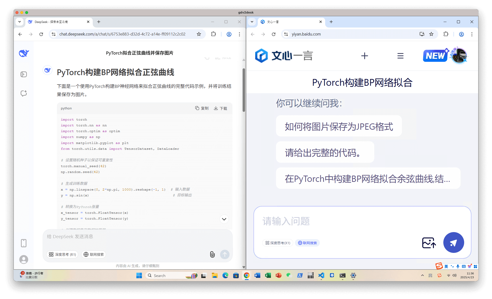
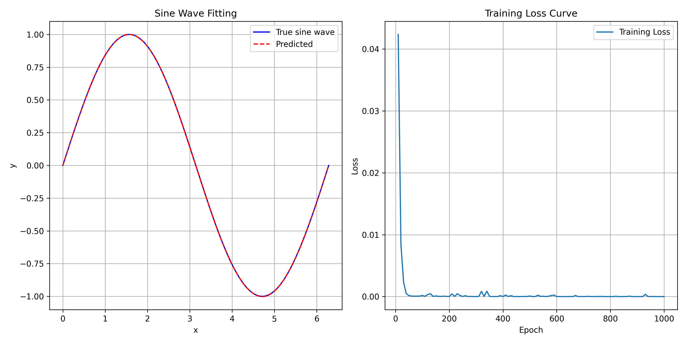
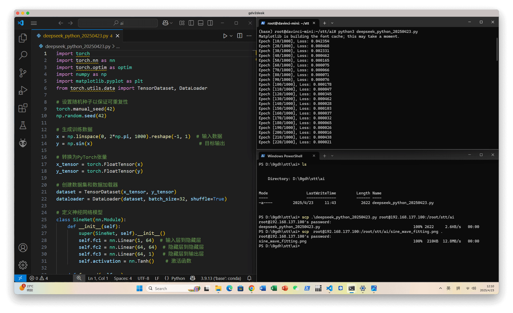

1、任务描述
任务1：构建BP网络拟合正弦样本数据
- 样本数据，由程序自动生成。
任务2：构建BP网络预测药品销量
- 已有1月到12月的药品销量。
- 根据1、2、3月的销量，预测4月的销量；根据2、3、4月的实际销量，预测5月的销量；……。直至满足预测精度为止。
任务3：构建BP网络预测公路客运量和货运量
- 已有1990年到2009年的客运量和货运量数据。
- 根据历史数据，预测2010年和2011年的客户量/货运量数据。
任务4：针对任务1、2、3，不同隐含层对结果影响（采用均方根误差进行分析）
任务5：针对任务1、2、3，不同个数神经元对结果影响（采用均方根误差进行分析）
2、操作参考
以下以 Python + PyTorch + 拟合正弦样本数据 为例，供实验操作参考。
2.1 AI辅助生成基本样例程序
使用 DeepSeek，或者文心一言，或者其他，获取基本样例程序。并从 DeepSeek 生成结果中下载样例程序，保存到本地 PC 机。 
2.2 在开发板上运行样例程序
上传样例程序到开发板
在本地 PC 机命令行窗口（比如 powershell）执行以下命令，复制样例程序到开发板的指定目录中。
scp .\deepseek_python_20250423.py root@192.168.137.100:/root/stt/ai
-- 远程复制文件的命令
deepseek_python_20250423.py
-- DeepSeek 生成的样例程序。请替换为 PC 本机保存的文件名。
root@192.168.137.100:/root/stt/ai
-- 以 root 用户身份，复制文件到 192.168.137.100（开发板的 IP 地址） 的 /root/stt/ai 目录。请替换为开发板上的期望的目标目录名。
在提示 root@192.168.137.100's password: 后面，输入 root 用户的密码
Mind@123，输入完成后按回车键。如果密码输入有误，会提示再次输入密码。输入密码时，屏幕不会有显示，这是正常的。
在开发板上运行样例程序
以 root 用户登录开发板。
用 cd 命令切换到样例程序所在目录，执行以下命令运行样例程序：
(base) root@davinci-mini:~/stt/ai# python3 deepseek_python_20250423.py
-- 样例程序所在目录。目录不同，显示不同。
python3
-- Python 解释器。
deepseek_python_20250423.py
-- DeepSeek 生成的样例程序。请替换为 PC 本机保存的文件名。
执行后稍等几秒，屏幕会显示如下信息，表明正在拟合。
Matplotlib is building the font cache; this may take a moment.
Epoch [10/1000], Loss: 0.042354
Epoch [20/1000], Loss: 0.008468
Epoch [30/1000], Loss: 0.002331
Epoch [40/1000], Loss: 0.000462
Epoch [50/1000], Loss: 0.000165
Epoch [60/1000], Loss: 0.000075
Epoch [70/1000], Loss: 0.000066查看运行结果
在本地 PC 机命令行窗口（比如 powershell）执行以下命令，从开发板的指定目录中复制运行结果（保存在图片）到本地 PC 机。
scp root@192.168.137.100:/root/stt/ai/sine_wave_fitting.png .（最后有个点，表示复制到本地 PC 机的当前目录中。如要复制到其他目录中，请替换为本地 PC 机的目录名。）
scp 从开发板上复制文件到本地 PC，和从本地 PC 机复制文件到开发板，非常类似，此处对命令不重复解释了。
用图片工具查看结果，如下所示：

2.3 其他建议
建议整个屏幕3分屏。左边：VSCode修改代码；右上： powershell命令行窗口，以 root 用户登录开发板；右下： powershell命令窗口，在本地 PC 机。 
比如，将样例程序的训练 1000 次，改成 100 次。然后在右下窗口，scp 新代码到开发板。在右上窗口（开发板上），执行新代码。再到右下窗口，将执行结果（图片）scp 复制到本地 PC 机。相对比较方便、高效的。